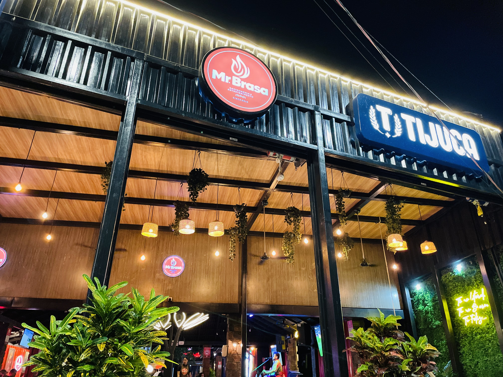
Mr. Brasa Gastronomia
Ambiente super aconchegante com música ao vivo, drinks especiais, cerveja trincando e o melhor do churrasco na brasa, com destaque para a famosa picanha nordestina.

Orla Coffee
O ponto de encontro da Orla, unindo cafés especiais e lanches deliciosos a uma vista privilegiada para o pôr do sol, ideal para viver momentos inesquecíveis à beira do rio.
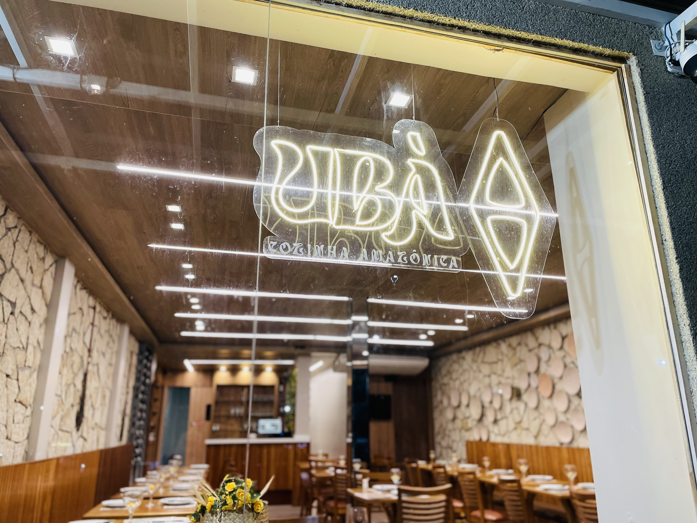
Ubá Gastronomia
Um dos restaurantes mais bonitos e elegantes de Icoaraci, destacando-se pelos pratos regionais como o pato no tucupi, feitos com ingredientes fresquinhos que vão do rio direto para a sua mesa.

Buriti Gastronomia
Famoso pela maravilhosa carne de sol de filé grelhado com queijo coalho e macaxeira na manteiga de garrafa, que agora pode ser acompanhado com o exclusivo Vinho Buriti, o vinho da casa.

Restô da Villa Prime
Destaca-se pelo prato exclusivo Armando Tavares, que traz filé grelhado acompanhado de arroz de chicória, purê de batata-doce, banana e farofa.
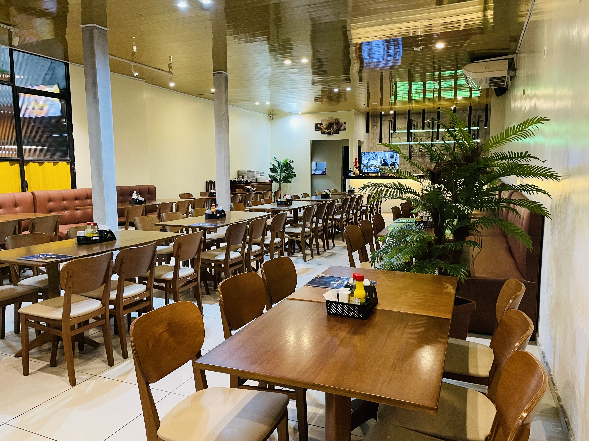
Sapucaia
A casa faz sucesso com o Peixe Jutuba, crocante por fora e macio por dentro, servido com vinagrete fresquinho e um autêntico arroz com jambu.
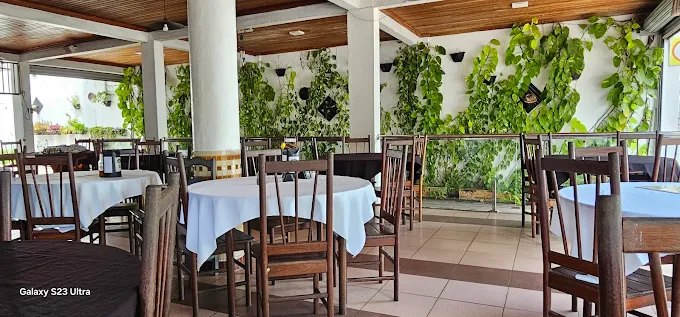
Tetto
Com uma tradição que vem desde 1990, é referência na Orla e conquista clientes há gerações com o seu icônico Peixe ao Molho de Camarão.

Clube do espeto
Ideal para o fim de semana, reunindo espetinhos variados, tira-gostos caprichados e cerveja gelada, acompanhado por música ao vivo e transmissão de jogos.
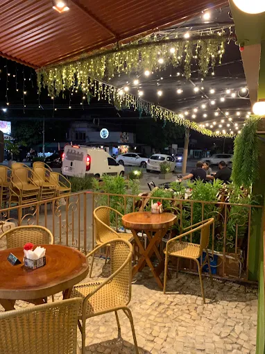
Manga Itália
O melhor da gastronomia italiana com um toque paraense irresistível, onde você pode montar o seu próprio prato ou pedir o mais desejado Filé Manga Itália.
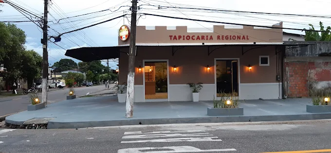
Tapiocaria Regional
Cafeteria acolhedora, servindo cafés quentinhos, tapiocas recheadas na hora, bolos e pães ideais para o café da manhã ou da tarde.
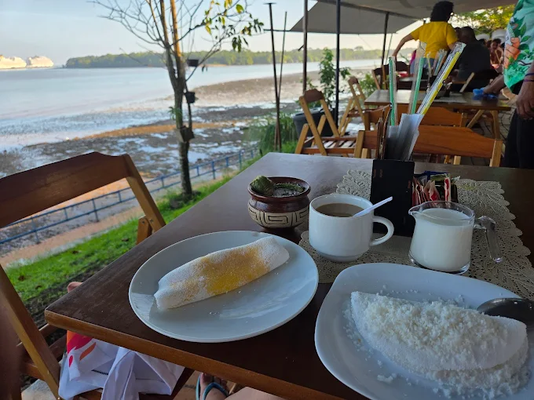
Cantinho da Tapioca
Cafeteria charmosa localizada bem na Orla de Icoaraci, de frente para o rio, perfeita para tomar um café com tapiocas, pães etc. curtindo um pôr do sol lindíssimo.

Porão Itália
Em um ambiente único e elegante dentro de um porão, é a melhor pizzaria de Icoaraci, com um cardápio completo de pizzas tradicionais, especiais e especialíssimas.

Kas pizza
Uma das pizzarias mais animadas, com um cardápio variado, espaço kids para as crianças e um tradicional rodízio completo que agita todas as sextas-feiras.

Artezzano Forneria
Pizzaria artesanal que se destaca pelas combinações sofisticadas, com destaque para o novo e exclusivo sabor de Camarão ao Pesto Genovese.
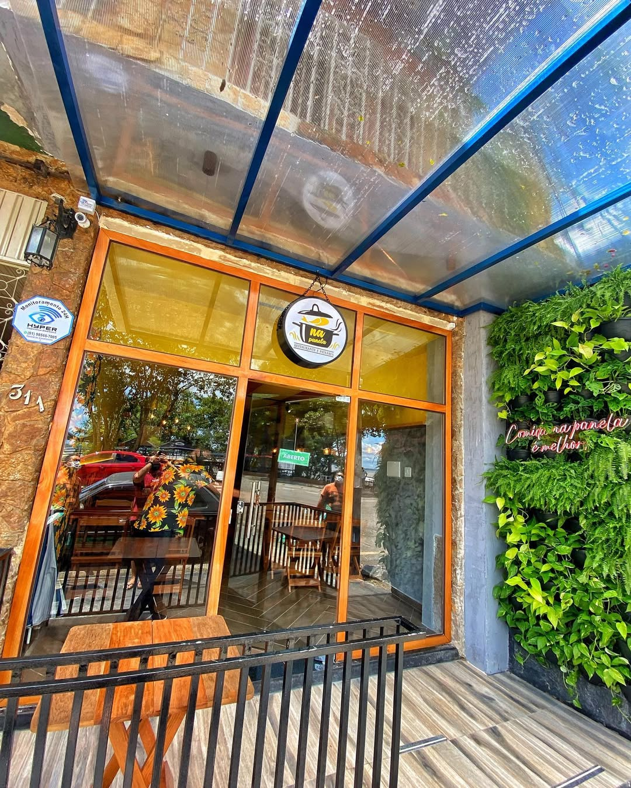
Na panela
Um espaço versátil que mistura restaurante e cafeteria, com destaque para o prato mais pedido: a Picanha "Lo Chef", acompanhada de purê de abóbora, farofa de cebola roxa, macaxeira frita, rapadura e arroz branco.
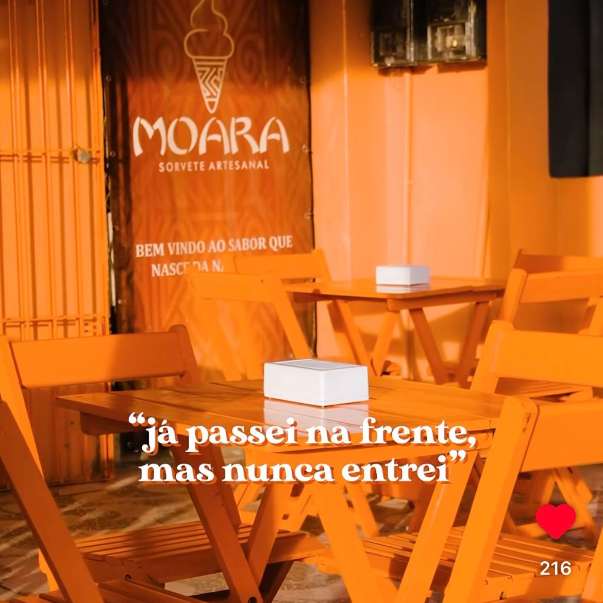
Moara Sorveteria Artesanal
Uma excelente opção para curtir com a família, oferecendo deliciosas saladas de frutas e sorvetes com casquinha a partir de R$ 10,00 para refrescar o seu dia.
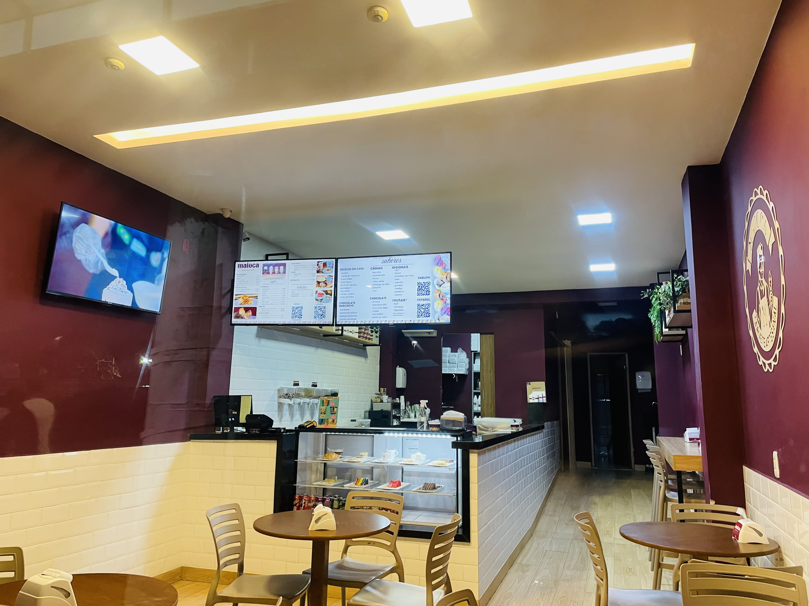
Maioca
Sorveterias tradicionais com ambientes lindos, perfeitos para saborear milkshakes caprichados, sorvetes e sobremesas deliciosas.
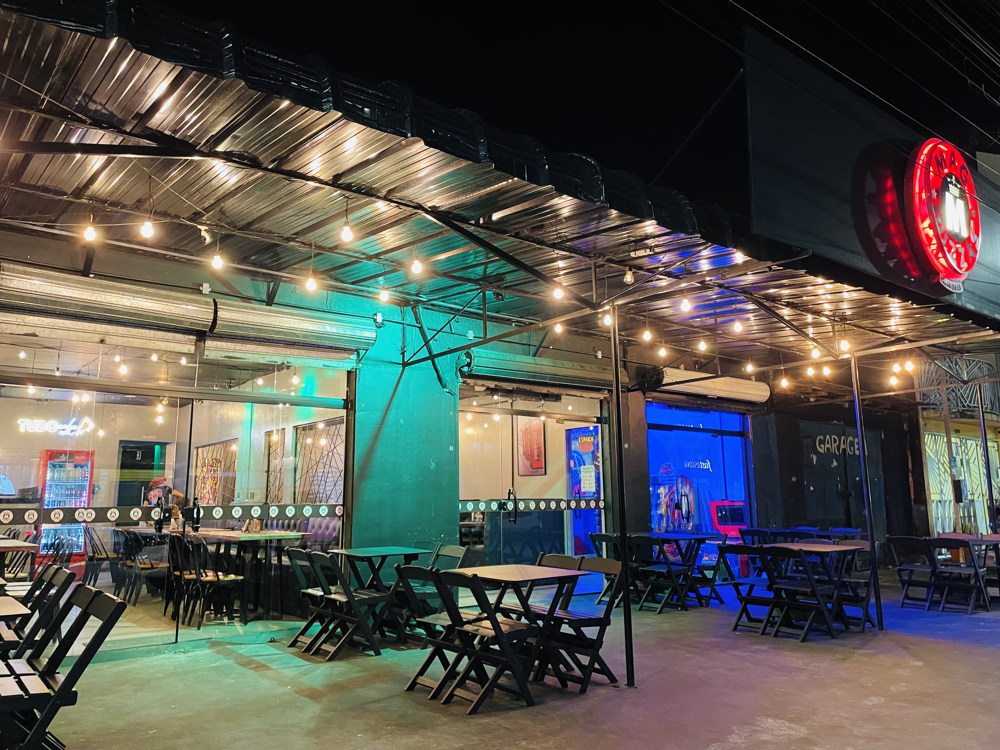
Mag pizzas
Ideal para reunir toda a família, a casa oferece uma imensa variedade de sabores de pizzas salgadas e doces, além de contar com um excelente espaço kids.
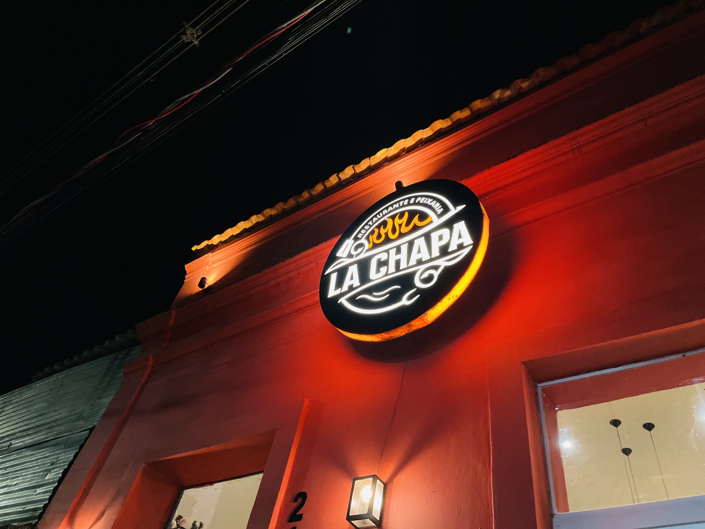
La Chapa
Um ótimo ponto de encontro que serve porções caprichadas de petiscos e pratos com frutos do mar, com destaque para a tradicional isca de peixe com vinagrete e o camarão à milanesa.
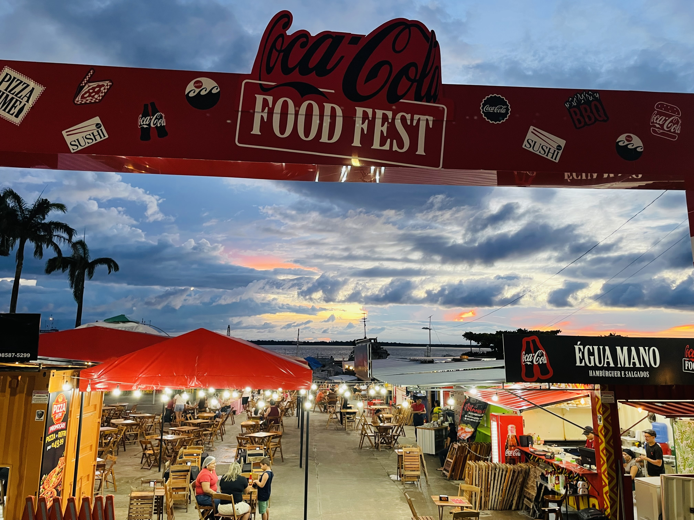
Orla Container
Um complexo gastronômico moderno de frente para o rio que reúne vários empreendimentos no mesmo espaço, oferecendo desde cafeterias até pizzarias e restaurantes para todos os gostos.
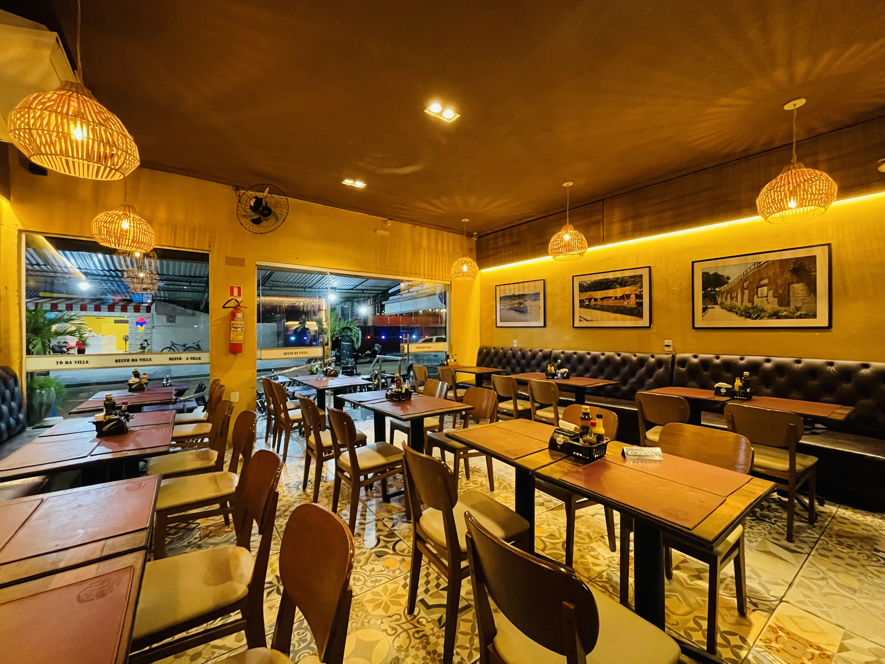
Restô da villa
O grande destaque da casa é o prato executivo de Peixe na Chapa, uma opção deliciosa, muito bem servida e cheia de sabor.
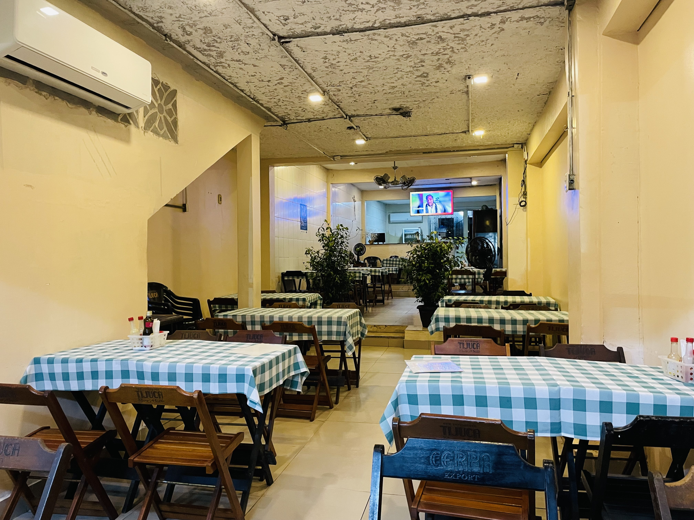
Parceiro's
Espaço aconchegante, ideal para curtir com amigos e família saboreando refeições completas, petiscos variados e aquela cerveja gelada.
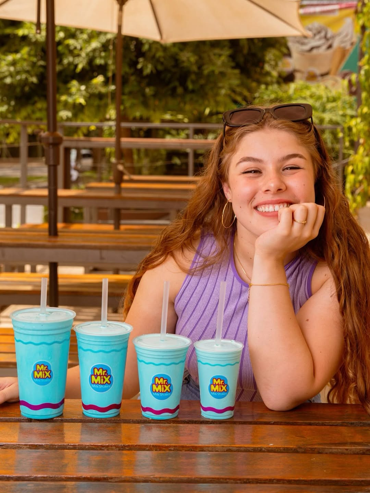
Mr. Mix
Sorveterias tradicionais com ambientes lindos, perfeitos para saborear milkshakes caprichados, sorvetes e sobremesas deliciosas.
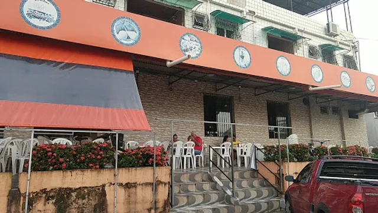
Delícias da Vila
O espaço mais tradicional de Icoaraci com um cardápio super completo, servindo desde maniçoba e tacacá raiz até chapas mistas e muito mais.